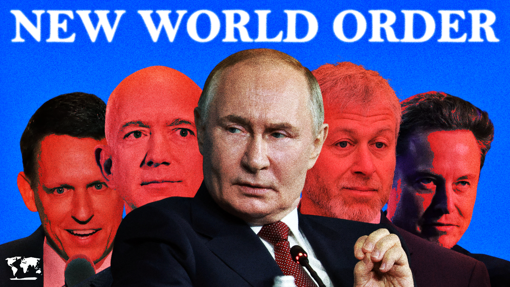
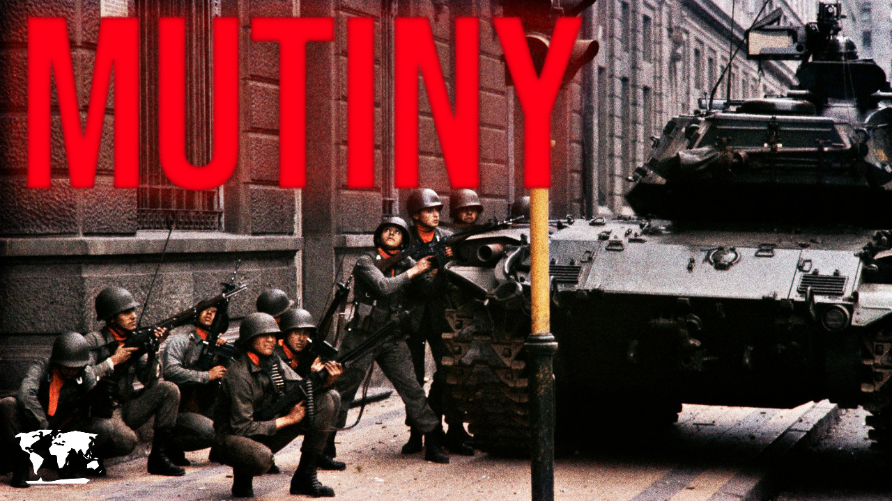
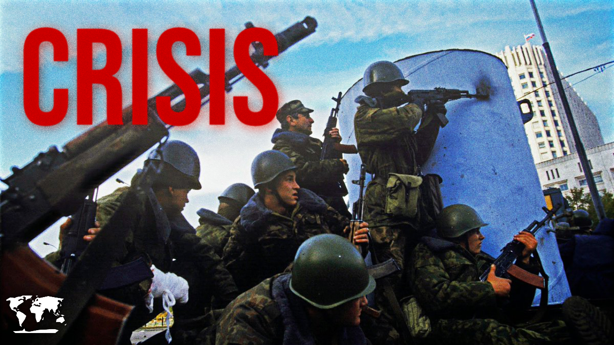

What Really Happened at Tiananmen Square?
The 1989 protests, the crackdown, and the questions that remain unanswered

How Oligarchs Rule the World
China's billionaire crackdown, the global minimum tax, and the fight to rein in oligarchic power

no thumbnailHow Oligarchs Took Over the World
From Russian privatisation to Silicon Valley — how billionaires captured political power

The Revolution that Transformed Iran
The Iranian Revolution of 1979 and the birth of the Islamic Republic

The Secret Police That Spied on Everyone
The Stasi, East Germany's surveillance state, and the tactics that terrorised a nation

When a Secret Organization Overthrew Korea's President
October 26, 1979: Park Chung-hee's assassination and the Hanahoe coup

no thumbnail'">The Military Coup That Broke Chile
September 11, 1973: The fall of Allende, and the rise of Pinochet

When Georgia Had a Violent Coup
Zviad Gamsakhurdia and the civil war that followed Georgian independence

The Revolution That Ended Communist Romania
Ceaușescu's fall, the Timișoara uprising, and the bloody revolution of 1989

no thumbnail'">The Coup That Almost Ended Russia
October 1993: Yeltsin, the constitutional crisis, and Moscow's street battles

When China Had a Public Purge
The Gang of Four trial and the spectacle of revolutionary justice